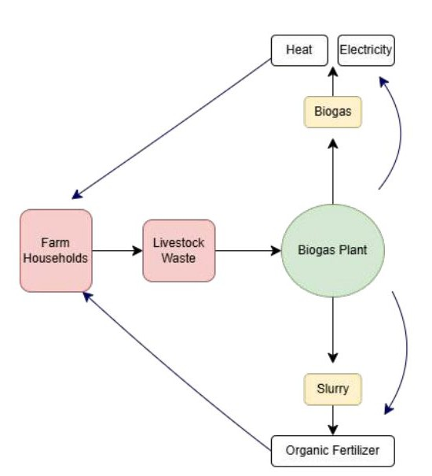

Project 01 · Economics honors thesis
Closing the Poop Loop: The Creation of a Manure Market in India's Gobar Dhan Scheme
Amherst College · Advised by Prof. Jessica Reyes · 2026Manure is a valuable fertilizer input that rarely reaches the fields that need it, because it's too costly to transport far from the livestock that produce it. India's 2018 Gobar Dhan scheme tries to fix this by installing village-scale biogas plants that buy raw dung and distribute nutrient-rich slurry back to local farmers. I built a village-level panel from plant registry and water-quality records to test whether this actually shifts farmers away from chemical fertilizer, using water turbidity as a proxy for nutrient runoff.
Key finding: No detectable average effect on turbidity. But villages farther from
fertilizer shops see meaningfully larger reductions, consistent with the theory that
substitution incentives bind only where chemical fertilizer is genuinely costly to reach.